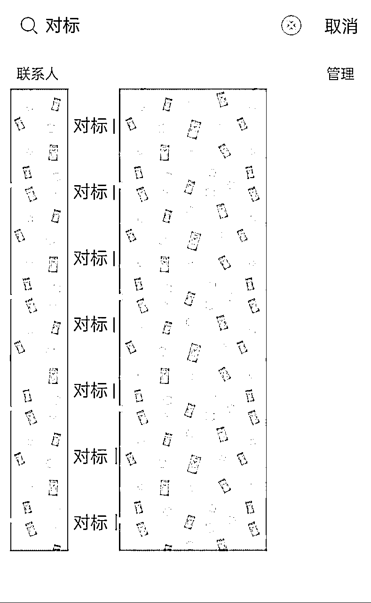

来源：https://yxy2hhcyyby.feishu.cn/docx/EomGdZozPoMIedx4b9Ccfc7gn8d
圈友好，我是开卷，很高兴再次和大家见面！
今天想和大家分享，私域积累比较弱，公域还没做起来的新手，如何边航海边赚钱，快速拿到正反馈。
开卷这次报名了AI赋能IP和AI自媒体，在航海开船当天中午突然的一个想法，发了一条朋友圈，让我这几天还没正式做新号，就持续有收钱的正反馈。
昨天有圈友问我是不是私域积累比较多，所以这件事才做得比较顺。事实上，能看到我这条朋友圈的人才不到500人，包含实力很强的大佬、“同行”和吃瓜群众。
如果你还是新手，还没有跑通闭环，想快速赚到第一块钱，练赚钱的手感，不妨和开卷一样从这种小产品做起。

（从航海开船到今天，已经卖出7个）
考虑到有些圈友可能和当初刚进生财的我一样迷茫又容易自我劝退，今天快速和大家分享我做这个的思路以及小建议，方便想赚钱的圈友快速去尝试。
首先，信息差无处不在。
亦仁老大说，你进了生财，就比不在生财的人有了更多的搞钱认知。
同理，参加生财航海也比没有实战的人有更清晰的认知。比如开卷做AI自媒体，有航海手册和教练答疑，就比盲目模仿别人的人，会少踩很多坑，效率会更高。
其次，验证学习是否有效的方法，就是输出。
验证自己有没有真正学会一项技能最快的方法，就是去教小白。如果开卷能把学到的思路教给别人，也能证明这个思路我确实掌握到位了。
最后，锁定真需求，且自己做起来不费劲，甚至很开心的事。
开卷之所以锁定小红书对标这个点，是因为我想做的AI自媒体就准备以小红书为主，一定会涉及找对标，而且之前刷小红书笔记的时候，自媒体博主评论区总有人问怎么找对标，几乎所有的教人做小红书的博主都会教学员怎么找对标，说明找对标是想做小红书的人必须要搞定的问题。
那么我的潜在客户就是要么不知道怎么找对标，要么没时间（没耐心）刷对标的自媒体人，但我喜欢大量刷对标，平时刷到好的内容也会随手分享给朋友。
那么对开卷而言，做小红书对标分享，就是把我原本分享给朋友的笔记，分享给原本不那么熟，但愿意付费的朋友。
这样，这个小产品就是既有需求，我也乐在其中的选择。
顺便说，这个思路也在AI赋能IP中的定位环节，进一步得到确认，让我更有信心去做。
做这个小产品，对开卷而言，就是3件事。
第一件事，决定做这件事。
决定做这件事只用了不到10分钟，主要考虑的是：
因为我之前总想着要做出大成绩才能做产品变现，这个想法让我错过很多机会。
这两年看到很多人是边测试边赚钱的，比如考研博主就是边备考边接广，真正考研结束，有些人失败了，就觉得自己不配做考研博主，而且无论成功还是失败，备考时的状态，很难再还原出来了。（这也是为什么我想要现在和圈友分享，而不是等航海结束拿到最终结果再分享的主要原因）
生财航海实战，对当下的我而言，就像备考过程之于考研博主，可以说，这个是在借航海的“势”来变现。
正如第一部分分享的，因为信息差，因为自己喜欢，也有一点点小优势，比如我花在这件事上的时间比别人多。
为了提升沟通效率，我写了价格、服务周期、个人优势、适合人群和注意事项这些我觉得最重要的事，其他的随机应变，不用很复杂。
边想边在可画找个简单的海报模板，做完也就几分钟的时间。
第二件事，日常刷对标和分享。
这个我就完全是根据自己的习惯来的，没有因为它是个产品而去设定任何的规则和流程，因为这样的阻力最小，执行难度最低，效率最高，目前也没有任何的不良反馈，反而收到好评。
第三件事，朋友圈分享进度和互动。
虽然小产品不用大肆宣扬，但是也要日常发圈分享进度，因为你不知道需要这个产品的人会在什么时候刷到你的朋友圈。
开卷决定做这个的时候没有想太多，只是觉得小产品，完全可以边想边做，遇到问题再说，不过也可以和圈友分享，在这5天的测试中，我遇到的5个问题。
问题1：为什么不做社群，群分享不是效率更高吗？
要不要做社群，开卷觉得因人而异。
相较于社群的热闹，开卷喜欢1V1深度沟通，而且不喜欢社群的低价值信息干扰，此外，私域基础比较弱的人，能有多少人报名也未知，如果人少，其实没必要做社群。
当然，如果你的私域基础强大，喜欢公开释放影响力，或者你找到的需求受众更广，想要借机把社群做起来，也可以试试看。
问题2：为什么定价这么低，是故意卷低价吗？
开卷一直不喜欢低价竞争，低价只是筛选有付费意识的人，而且因为付费过，也才会相对重视。
因为没有把它当做核心的赚钱产品，加上知道自己的影响力还有限，跑通闭环比赚到大钱对当下而言更重要，所以只设置了一杯奶茶钱（毕竟平时给朋友分享都不好意思收钱）。
问题3：客单价低要筛选客户吗？什么人都收吗？
先说前提，开卷觉得一定要筛选，只是具体要劝退什么人，我开始也没有完全想清楚。
测试的这4天，我劝退了这些人：
①定位不明确的纯小白，因为我的交付只涉及对标，如果定位不明确，对标无法筛选；
②付款前想要的很多，但执行力很差的想靠筛出的爆款快速涨粉变现（把我当许愿池），对搞钱的认知偏差很大，感觉风险太大，19.9真的没必要收这样的人添堵；
③差点劝退了一个，前期问了特别多的做内容的细节，感觉她想找的是私教的姐妹，这种如果预期和交付不符，也很麻烦，所以要收钱，也要明确交付界限，做好预期管理（最后她接受只找对标，而且她的方向我很熟悉，所以收了钱）；
④我觉得是比较低价值的领域，以及我完全不感兴趣的方向的，也都劝退了，因为前者我感觉再找对标，做出来的价值也不大，没有必要浪费彼此的时间，后者是我要为了她的需求和方向去花时间精力赚这19.9，不值得
总体来看，我会劝退：完全0基础的、认知不足的、后期有风险争议的、低价值的和我不感兴趣的领域
问题4：19.9的产品真的值得做吗？
重要的不是19.9，而是这个产品对你而言意味着什么。
对有些圈友而言，这个可能是引流品，对有些圈友而言，这是个可以把定价拉高而边际成本递减的基础产品，对开卷而言，这是个可以快速变现并且可能可以挖掘更多机会和需求的产品。
它可能是起点，也可能是契机，到底是什么，慢慢往后做才知道。
问题5：都在用工具拉数据，手刷对标不会效率很低吗，真的有价值吗？
用软件找爆款我之前做小红书也试过，但它有个bug是你会采集到很多看似数据好，普通人模仿不来的笔记和暴力起号的互动笔记，还得一个个点进去看封面、正文和评论区，会做大量的无用功。
但是手刷，我用的是小号，平时也会拿它冲浪、刷热点，就是尽可能模拟真实用户去搜索，也会在『发现』页面看看平台都在推什么。
找对标的时候也会考虑到瀑布流的排列下，哪些封面和标题更吸引我，点进去看正文和评论区，哪些内容和互动更有价值。
我刷完，给朋友分享笔记也在分享我的视角，咱们就有双重视角去看同一篇笔记，价值比表面数据更大。
此外，这个过程给客户提供便利，也锻炼了自己分析笔记价值和搞钱思维的能力，一举两得。
希望开卷今天的分享对你有启发，趁着航海还在继续，借着自己在学习和实战的东风，去影响更多人，赚到第一块钱，或者做新款有新潜力的产品，期待你的好消息！
（没有写很长，希望感兴趣的圈友看到了就去做，干中学，有问题想办法解决也是积累经验值呀~~）
圈友们可以在这条帖子评论区留下你所在的航海上，可以衍生出哪些可以做的小产品，快速跑通闭环，说不定集思广益、相互启发，还有新发现或者更好的方案哦~~